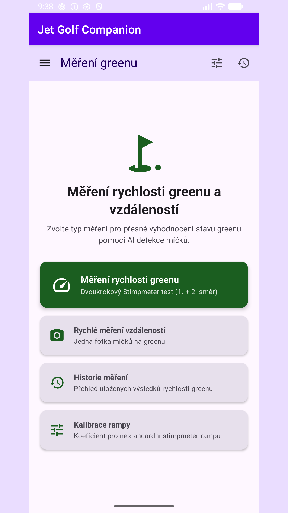
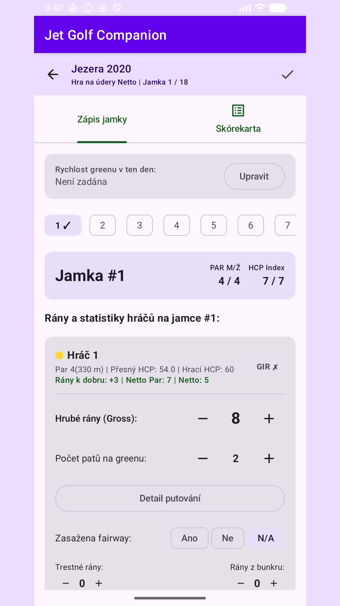
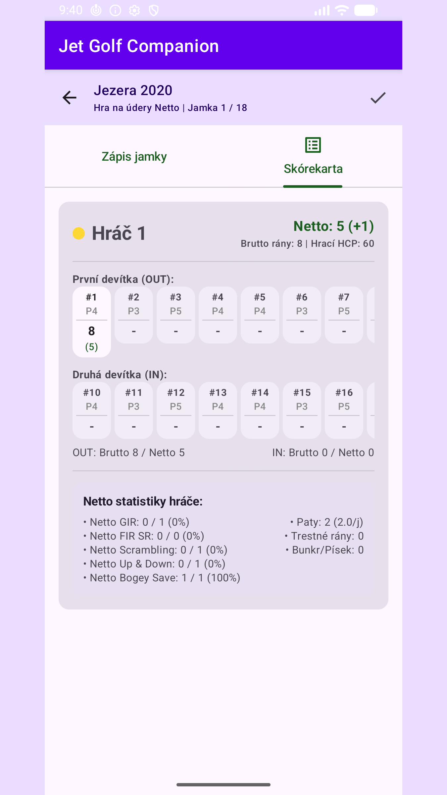
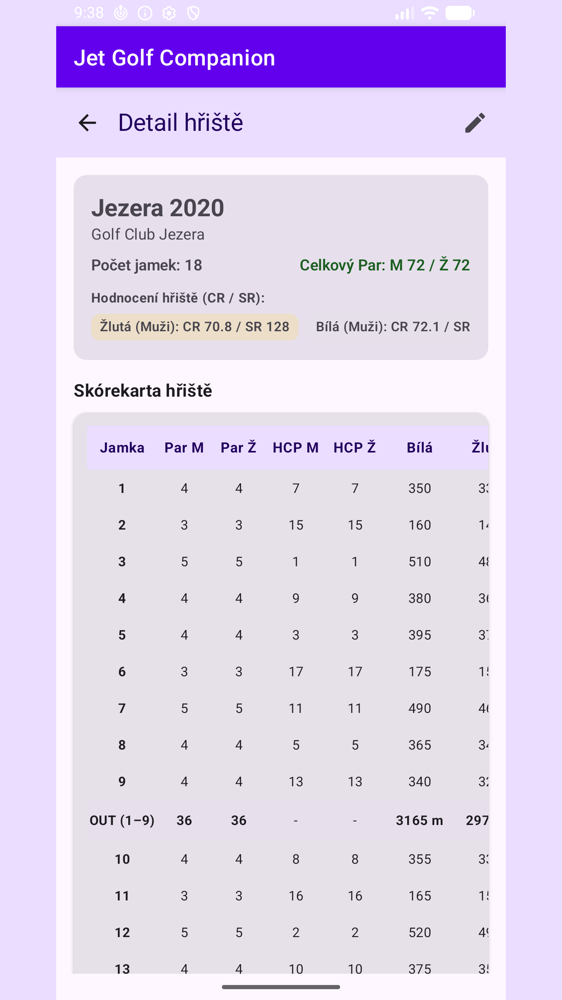

Rdanhel Dev
Rdanhel DevZměřte green, spočítejte kolo, mějte statistiku pod kontrolou.
Jet Golf Companion je nativní Android aplikace, která z běžné fotky pomocí AI detekce míčků změří rychlost greenu i vzdálenosti mezi míčky, vede evidenci hráčů a hřišť a umožní odehrát a oskórovat celé kolo v systému Brutto i férové Netto podle pravidel EGA/WHS. Navíc naimportuje a vyhodnotí kola z hodinek Garmin, kreslí rány podle GPS na mapy jamek a všechna data zálohuje do jediného souboru – takže veškerou svou golfovou statistiku máte offline na jednom místě.




Osm nástrojů pro jednu hru
Každý modul funguje samostatně. Nemusíte použít všechny – klidně jen měřič greenu, jen skórování, nebo jen archiv kol z Garminu.
Rychlost greenu
Dvoukrokový Stimpmeter postup: dvě fotky dojezdu, AI najde míčky, aplikace spočítá oficiální Stimp se sklonovou korekcí.
Vzdálenosti míčků
Z jedné fotky. Skutečný průměr golfového míčku 42,67 mm slouží jako měřítko pixelů na milimetry.
Hráči a bag
Profily hráčů s handicapem a kontrola bagu podle pravidla 14 holí (R&A/USGA).
Hřiště
Ruční zadání, import z CSV nebo stažení scorekaret z cgf.cz podle odkazu – volitelně s mapami jamek.
Hra a skóre
Odehrajte celé kolo s GPS ranami. Brutto i férové Netto podle EGA/WHS – Netto Par, GIR, scrambling, up&down.
Import z Garminu
Ručně exportovaný golf-export.json z Garmin Connect. Kola se slučují a nikdy nepřepisují.
Mapy jamek a GPS
Georeferencovaný obrázek jamky se zónami. Každá rána se vykreslí podle GPS s odvozeným klubem, délkou a povrchem.
Záloha dat
Jeden JSON soubor s kompletními daty. Uložte si ho třeba na Google Disk a obnovte po přeinstalování.
Rychlost greenu za dvě fotky
Postavíte stimpmetr, necháte míček dojet a vyfotíte, kde se zastavil. Totéž v protisměru. AI detektor najde na obou fotkách míčky, aplikace změří dojezdovou vzdálenost a zkombinuje oba směry Brede formulí pro kompenzaci sklonu do jednoho oficiálního čtení Stimp.
- Kalibrační koeficient pro nestandardní (doma vyrobenou) rampu – výsledek zůstane srovnatelný se standardní USGA rampou.
- Použitý koeficient se ukládá ke každému měření pro pozdější referenci.
- Historie měření greenů s datem a hodnotou.
Referenční hodnoty
- Průměr míčku 42,67 mm
- Standardní USGA rampa 91,4 cm / 20°
- Kompenzace sklonu Brede
- Výchozí koeficient rampy 1.0
Vzdálenosti míčků z jedné fotky
Vyfotíte skupinu míčků, ťuknete na referenční míček a aplikace ukáže vzdálenosti ke všem ostatním. Měřítko odvozuje ze skutečného průměru míčku, takže nepotřebujete žádnou kartičku ani metr v záběru.
- Ideální na tréninkové drily – kruhy okolo jamky, rozestupy, přesnost patování.
- Tap-to-select: referenční míček i cíle vybíráte přímo v náhledu fotky.
- Funguje offline, přímo z fotoaparátu telefonu.
Jak to počítá
- Měřítko 42,67 mm = ⌀ míčku
- Vstup 1 fotka
- Výstup vzdálenosti v mm/cm
Odehrajte a oskórujte celé kolo
Živá hra vede skóre po jamkách, zaznamenává GPS pozici každé rány a na mapě jamky z ní odvozuje klub, vzdálenost k další ráně a povrch dopadu (fairway, green, rough, voda). Vedle hrubého Brutto skóre počítá i férové Netto, které podle obdržených ran na jamku srovnává hráče s různým handicapem.
- Playing Handicap a rány na jamku z Course/Slope Ratingu, včetně převodu 9jamkového hřiště na 18jamkový rating.
- Rozdělení ran podle Stroke Indexu.
- Netto statistiky: Par, GIR, FIR SR, Scrambling, Up&Down, Bogey Save, Full Game.
Pravidla
- Handicapový systém EGA / WHS
- Bag max. 14 holí
- Skórování Brutto + Netto
Kola z hodinek na jednom místě
Archiv kol z Garmin ekosystému je nezávislý na hrách odehraných v aplikaci. Stáhnete si z Garmin Connect golf-export.json, naimportujete ho a kola se sloučí podle scorecardId – už jednou naimportované kolo se nikdy nepřepíše.
- Přiřazení lokálního klubu a hřiště k Garmin ID – import pak zobrazí skutečné názvy klubů a GPS rány na mapě.
- Ručně zadaný handicap a pohlaví u kola – Netto skóre stejnou logikou jako pro hry v aplikaci.
- Analýza her sčítá hry z aplikace i kola z Garminu jednotně v jedné obrazovce.
Import
- Zdroj golf-export.json
- Slučování dle scorecardId
- Přepis kol nikdy
Vaše data zůstávají ve vašem telefonu
Aplikace nespoléhá na cloud ani na automatickou zálohu Androidu / Googlu. Všechno běží lokálně, bez účtu a bez přihlašování. Když chcete data přenést, exportujete je do jednoho JSON souboru a ten si uložíte, kam chcete. Obnova kompletně nahradí aktuální data obsahem zálohy – ale nikdy nesmaže mapy jamek, které jste si nakreslili lokálně.
Tři kroky k první statistice
Nainstalujte
Stáhněte aplikaci do telefonu s Androidem a fotoaparátem. Žádná registrace.
Přidejte hráče a hřiště
Vytvořte profil hráče a přidejte hřiště ručně, z CSV nebo stažením scorekarty z cgf.cz.
Měřte nebo hrajte
Změřte green dvěma fotkami, nebo spusťte živou hru a skórujte celé kolo s GPS ranami.
Časté dotazy
Potřebuji připojení k internetu?
Pro samotné měření, skórování i analýzu ne – vše funguje offline. Internet je potřeba jen při stahování scorekaret z cgf.cz.
Musím mít oficiální stimpmetr?
Ne. Pro nestandardní nebo doma vyrobenou rampu zadáte kalibrační koeficient a výsledek zůstane srovnatelný se standardní USGA rampou.
Jaký telefon potřebuji?
Android telefon s fotoaparátem. AI detekce míčků běží přímo v telefonu.
Nahrají se moje data někam na server?
Ne. Aplikace nemá cloud ani účet. Data přenesete jen ručně přes zálohovací JSON soubor, který si spravujete sami.
Napojuje se přímo na Garmin Connect?
Ne přes API. Z Garmin Connect si ručně stáhnete soubor golf-export.json a ten do aplikace naimportujete.
Ke stažení
Aplikace je aktuálně v uzavřeném testování na Google Play. Odkaz na veřejné vydání přidám sem, jakmile bude dostupné.